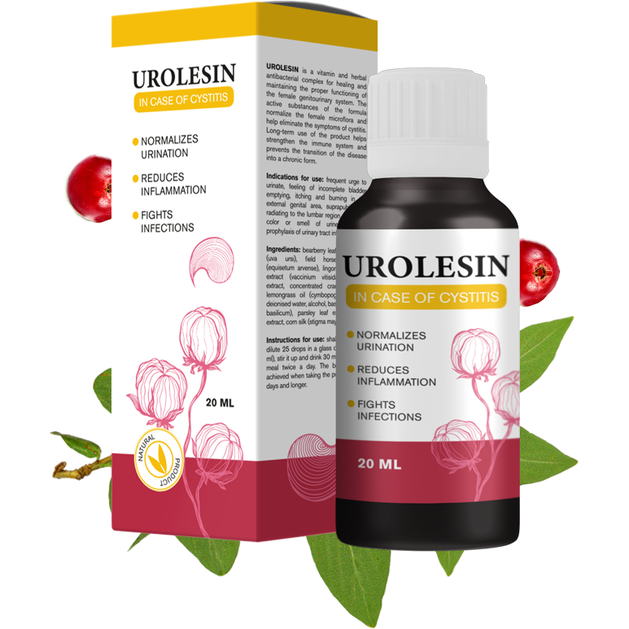

UROLESIN
Triple Strike a hólyaggyulladás ellen

Csökkenti a gyulladást és megszünteti a fájdalmat
Küzd a bakteriális fertőzésekkel
Védi a húgyúti
rendszert
rendszert
100 % EREDMÉNY
ÖKO TERMÉK
JÓVÁHAGYOTT AZ UNIÓBAN
AZ ÉV TERMÉKE
A cystitis tipikus tünetei:
ÁLLANDÓ VÁGY A WC-RE MENNI
FÁJDALOM ÉS ÉGŐ ÉRZÉS VIZELÉS KÖZBEN
HÓLYAGGYULLADÁS ÉS FÁJDALOM
ROSSZ SZAG ÉS SÖTÉT VIZELET
A TESTHŐMÉRSÉKLET EMELKEDÉSE
KÉNYELMETLENSÉG
Cisztitisz - a hólyag nyálkahártyájának gyulladása
Az esetek 90% -ában a betegség fertőző. A folyamatot az E.coli baktérium indítja be.
Az alábbiak bármelyike okozhat cystitist:
feszültség
hűtés
sérülés
hormonális problémák
betegség
a húgycső anatómiai szerkezetének jellemzői
3 fő tény
a cystitisről
1.
Leggyakrabban a nők cystitisben szenvednek, ennek oka a női húgyúti rendszer anatómiai felépítése. A nők 75%-ának volt már legalább egyszer hólyaghurutja.
2.
Az esetek 60%-ában a hólyaghurut krónikus formája alakul ki, évente 3 alkalommal jelentkeznek rohamok.
3.
A hólyaghurut tünetmentes lehet, ilyenkor még a vizsgálatok is megfelelőek lehetnek.
Ez veszélyes, mert pyelonephritis alakulhat ki.
elváltozás cystitisben
a hólyag felülete
Urolesin - természetes gyógymód, amely meggyógyítja az egész húgyúti rendszert
Aktív biológiai formula a húgyutak egészségének és védelmének támogatására
Gyorsan megszünteti a hólyaghurut tüneteit: fájdalomat, bizsergést, égő érzést, gyulladást
Stabilizálja a vizeletürítést
Növeli a szervezet fertőzésekkel szembeni ellenálló képességét
Megakadályozza a baktériumok terjedését a hólyag felszínén és a közeli szervekben
Elindítja az immunrendszer védelmét
Az összetevők tökéletesen kombinált formulája
Medveszőlőlevél, vörösáfonya és áfonyalé kivonatai
Petrezselyem és csalán levél kivonat
Zsurló kivonat
Citromfű és bazsalikom olaj
Shilajit kivonat
Kukorica selyem
Szakértői vélemény:
A cystitis gyors és hatékony kezelésének kulcsa az időben történő helyes kezelés. A cystitis esetében a fitoterápia jól bevált. Ezt a gyógynövényes kezelési módszert Magyarország és az USA legjobb tudósai találták ki.
Az Urolesin hatékony, kiváló minőségű és teljesen biztonságos szernek bizonyult.
A praxisomban használom, mivel a szer teljesen természetes, könnyen felszívódik, és a véráramon keresztül gyorsan eljut a húgyúti gyulladás fókuszpontjába. A fő különbség az Urolesin és más természetes készítmények között a proantocianidinek jelenléte, amelyek hatékonyak az E. coli baktériumok és a hólyaghurut egyéb kórokozóinak elpusztításában.
Az Urolesin azonnal hat:
- — küzd a tünetekkel
- — megszünteti a gyulladást
- — pmegtisztítja a hólyagot a fertőzésektől
- — védőréteget hoz létre, amely megakadályozza a visszaesést és a krónikus betegség kialakulását.
VÉLEMÉNYEK

Sebok Georgina, 34 éves
Ha a kezdetektől tudtam volna, hogyan kell helyesen kezelni a hólyaghurutot, nem kezdtem volna krónikus formába önteni a betegséget. De örülök, hogy az életemben van egy ilyen gyógymód, mint az Urolesin. Segített enyhíteni a fájdalmat és a gyulladást. 3 nappal az alkalmazás után már elkezdtem rendesen wc-re járni. Bár korábban a betegség általában hetekig elhúzódott... És évente 3-5 alkalommal volt cystitis-rohamom. Az Urolesin bevétele után hat hónap telt el, és a betegség nem tért vissza. És nagyon örülök!

Vörös Julia, 54 éves
A menopauza után tudtam meg a hólyaghurutról. Az orvos szerint erre a szervezet hormonális változásai és az immunrendszer gyengülése miatt van lehetőség. Az Urolesin jobban segített, mint más gyógymódok. Hosszú évekig krónikus hólyaghurutban szenvedett, de most először tudta meg, hogy a rohamok ilyen gyorsan gyógyíthatók. Egyetlen antibiotikum sem hasonlítható össze a természetes gyógyszerekkel.

Illes Nicoletta, 42 éves
Remek eszköz! Gyorsan hat, és sokáig elfelejtheti a hólyaghurutot. Két éve vettem be először, többszöri cystitis visszaesése után. Meglepetésemre hosszú ideig nem volt súlyosbodás. Ennek a szernek köszönhetően felépültem, és örökre megszabadultam egy szörnyű betegségtől! Milyen jó hólyaghurut nélkül! Mindenkinek ajánlom!
Az Urolesin i3 lépésben fejti ki hatását:
1.
Megszünteti a fájdalmas tüneteket
2.
Harcol a betegségek okai ellen
3.
Védelmet nyújt a húgyutak számára
Kerülje a hamisítványokat!
Az Urolesin nagy népszerűsége miatt a hamisítások gyakoribbá váltak. A cystitis eredeti gyógymódja, az Urolesin ezen az oldalon megvásárolható.
KÉRJÜK, LEGYEN ÓVATOS!
Az eredmény eléréséhez szükséges csomagok száma a szervezet egyedi jellemzőitől függ, és esetenként változhat.
UROLESIN
Triple Strike a hólyaggyulladás ellen
Csökkenti a gyulladást és megszünteti a fájdalmat
Küzd a bakteriális fertőzésekkel
Védi a húgyúti
rendszert
rendszert
100 % EREDMÉNY
ÖKO TERMÉK
JÓVÁHAGYOTT AZ UNIÓBAN
AZ ÉV TERMÉKE